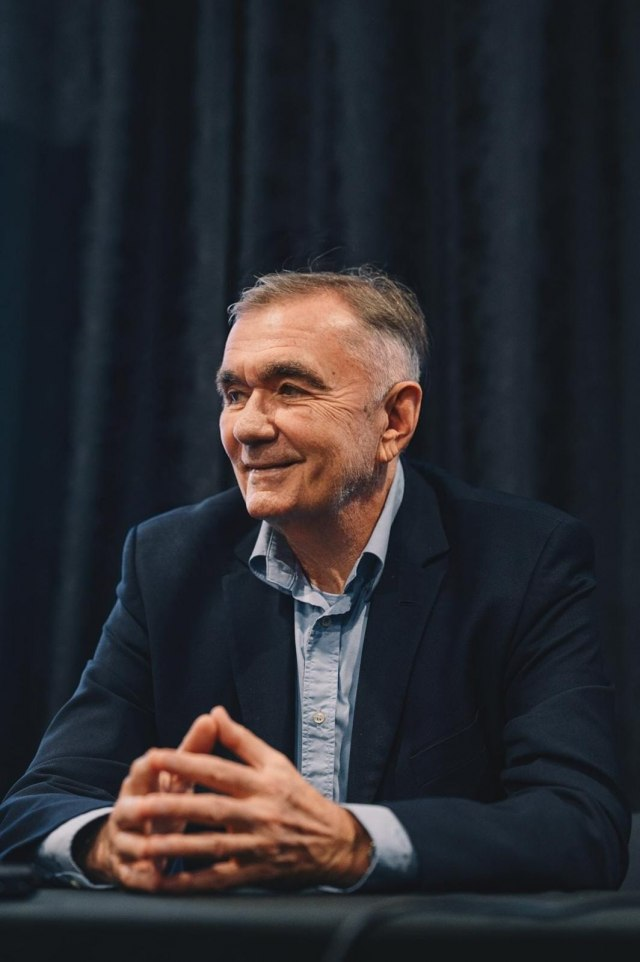
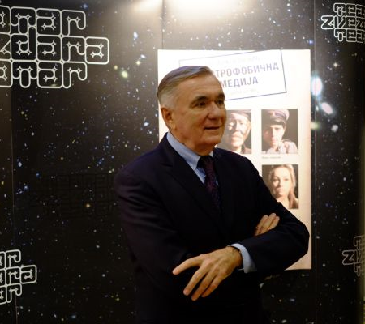
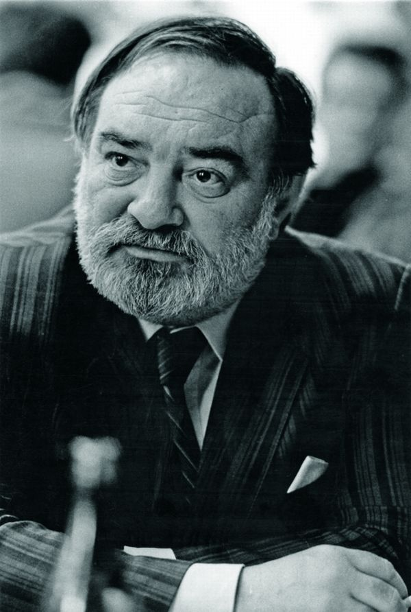
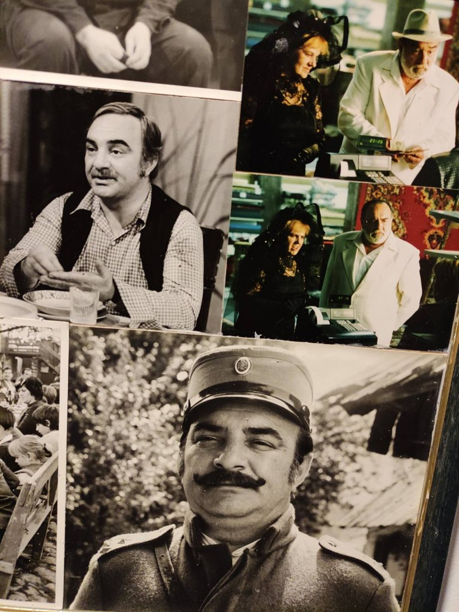
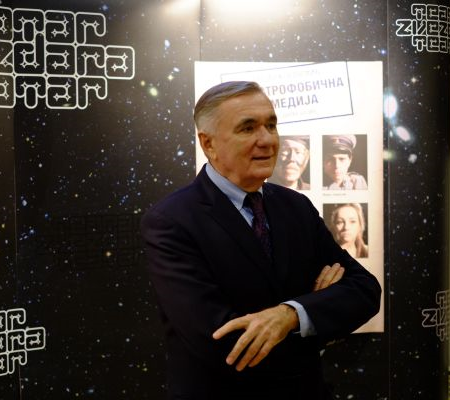
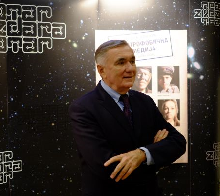
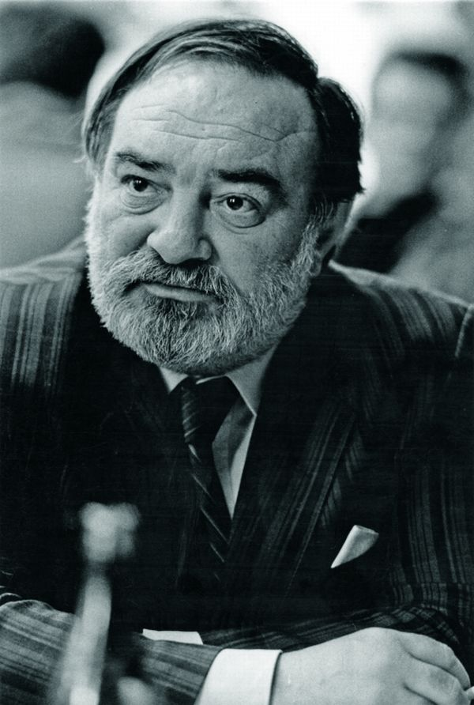
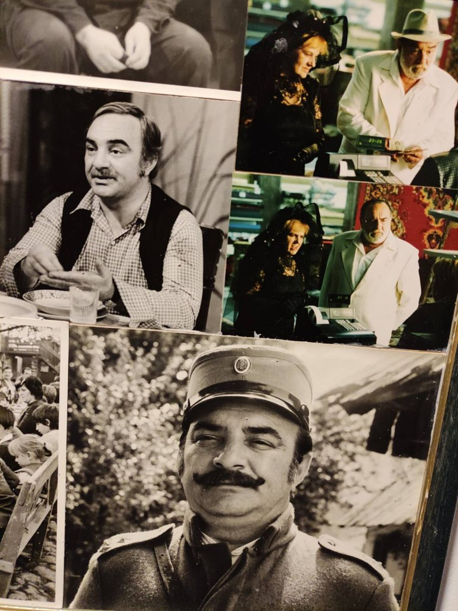
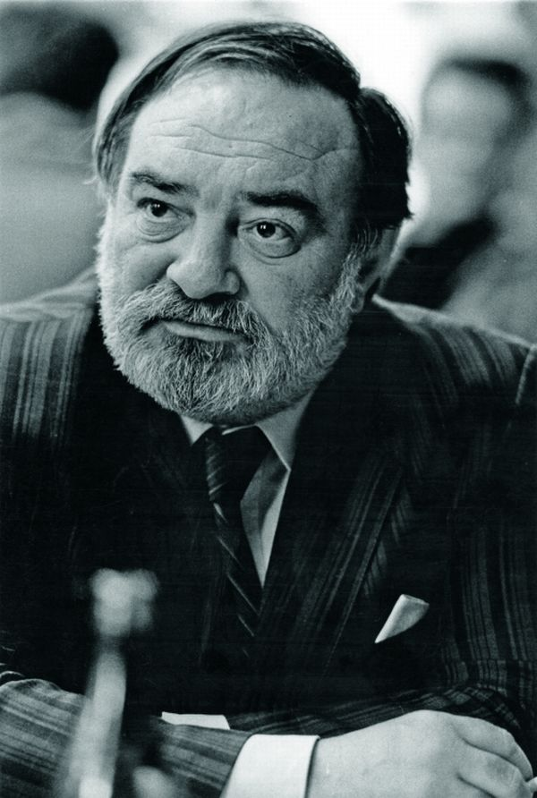
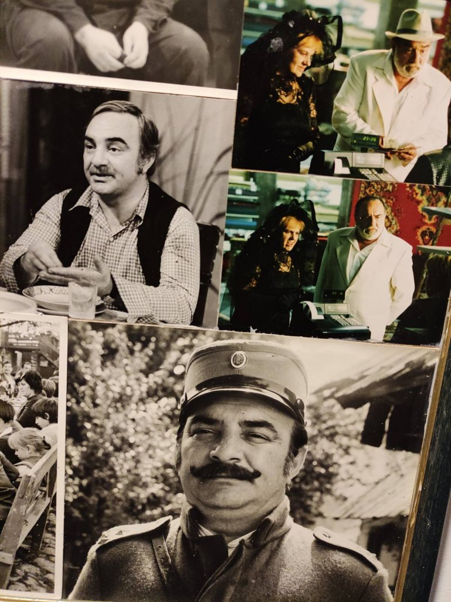

,, Једино што не треба да стане ако све стане је позориште. То је простор, последњи, одбране полиса, града, државе, демократије, гласа, крика, катарзе... Ту ћемо се наћи кад све стане, ако стане.."
Звездара театар је отворен 8. октобра 1984. представом "Мрешћење шарана"
Александра Поповића, у режији Дејана Мијача.
Када направимо пресек и сагледамо целокупну историју малог парчета земље на коме је настао Звездара театар, чини се да је том
простору некако било суђено да буде посвећен култури. Одмах после Другог светског рата, у време обнове и изградње, циглама из оближње циглане, подигнут је Дом Петог рејона, у коме је, сасвим случајно или не, радио будући
глумац Данило Бата Стојковић, који ће касније обележити историју сцене која се на том тлу родила.
Екипу првог комада Звездара театра „Мрешћење шарана“ чинили су Мирјана Карановић, која је тада тек
завршила академију, Војислав Брајовић тада већ познат по улози Тихог у „Отписанима“, Бора Тодоровић , Лазар Ристовски , Рада Ђуричин, Гордана Павлов и Изет Хајдархоџић. Иако су долазили из различитих позоришних ансамбала, понесени
добром енергијом сви су играли као један под редитељском палицом Дејана Мијача.
Представа је премијерно изведена 8. октобра 1984. године. Одиграна је чак 251. пут
пред скоро 94 хиљаде гледалаца и тако отворио новом позоришту, Звездара театру врата за бројне будуће успехе.
Током свих ових година у Звездара театру је одиграно близу 8.000 представа, 90 премијера, на гостовањима смо извели скоро 1.500 представа, а на нашој сцени као и на гостовањима угостили смо више од 1,7 милиона посетилаца. Освојили смо много награда, гостовали на бројним сценама у земљи и иностранству. И даље стварамо представе и путујемо…
ПРЕДСЕДНИК ПОЗОРИШТА
Директор звездара театра, академик, књижевник, драмски писац, сценариста и редитељ.
Рођен 1948. у мрђеновцу код шапца. Дипломирао је драматургију на академији за позориште, филм, радио и телевизију у Београду.
Написао је 21 драмско дело и 15 филмских и телевизијских сценарија. Режирао је позоришне представе и филмове. Његове драме изведене су у преко 150 иностраних позоришта.
Драме:
Маратонци трче почасни круг (1973),
Радован III (1973),
Балкански шпијун (1983),
Клаустрофобична комедија (1987),
Свети Георгије убива аждаху (1986),
Рођендан господина Нушића (2014),
Пролеће у јануару (1977)
Филмски и телевизијски програм:
Ко то тамо пева (1980),
Посебан третман (1980),
Маратонци трче почасни круг (1982),
Балкански шпијун (1984)


ДАНИЛО БАТА СТОЈКОВИЋ
Рођен је 11. августа 1934. у београду. завршио је глуму на академији за позоришну уметност у београду, у класи професора томислава танхофера.
Од 2011. године велика сцена звездара театра носи његово име. Позоришну каријеру започео је у Југословенском драмском позоришту (ЈДП; 1959), а 1962. постао је стални члан ансамбла Атељеа 212. Публика га је посебно заволела у „Звездара театру”, у улогама које је Душан Ковачевић писао за њега.



 


 


